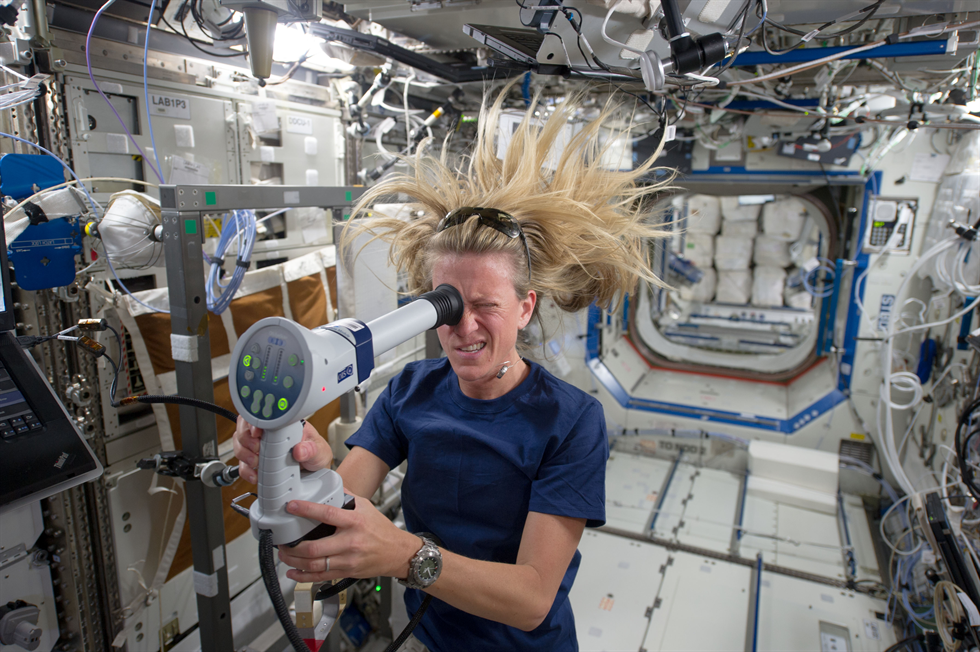

Research

NASA's Aeronautics Research Mission Directorate conducts aeronautics research.
NASA has made use of technologies such as the Multi-Mission Radioisotope Thermoelectric Generator (MMRTG), which is a type of Radioisotope thermoelectric generator used on space missions. Shortages of this material have curtailed deep space missions since the turn of the millennia.[151] An example of a spacecraft that was not developed because of a shortage of this material was New Horizons 2.
The earth science research program was created and first funded in the 1980s under the administrations of Ronald Reagan and George H.W. Bush.
NASA started an annual competition in 2014 named Cubes in Space. It is jointly organized by NASA and the global education company I Doodle Learning, with the objective of teaching school students aged 11–18 to design and build scientific experiments to be launched into space on a NASA rocket or balloon. On June 21, 2017 the world's smallest satellite, Kalam SAT, built by an Indian team, was launched.[citation needed]
Climate study.
{kind=link}
NASA also researches and publishes on climate change. Its statements concur with the global scientific consensus that the global climate is warming. Bob Walker, who has advised the 45th President of the United States Donald Trump on space issues, has advocated that NASA should focus on space exploration and that its climate study operations should be transferred to other agencies such as NOAA. Former NASA atmospheric scientist J. Marshall Shepherd countered that Earth science study was built into NASA's mission at its creation in the 1958 National Aeronautics and Space Act.